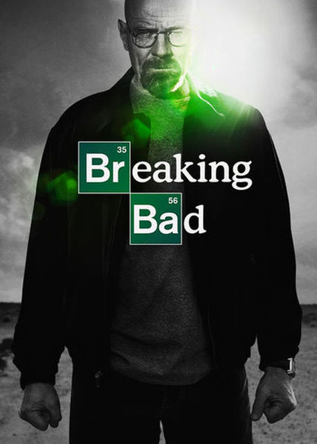

Breaking Bad acompanha a transformação de Walter White, um brilhante mas frustrado professor de química do ensino médio, que vive com dificuldades financeiras ao lado de sua esposa grávida, Skyler, e de seu filho, Walter Jr., que tem paralisia cerebral. Ao ser diagnosticado com câncer de pulmão em estágio terminal e perceber que deixará sua família desamparada, Walter toma uma decisão radical: usar seus conhecimentos científicos para fabricar e vender metanfetamina de altíssima pureza.
GENÊRO: Drama, Crime, Suspense Psicológico e Faroeste Moderno
ANO: 2013
NÚMERO DE TEMPORADAS: 5 Temporadas
AVALIAÇÃO CRITICA: A performance de Bryan Cranston (Walter White) e Aaron Paul (Jesse Pinkman) é descrita como um marco na história da atuação, rendendo à série 16 prêmios Emmy (incluindo 4 de Melhor Ator para Cranston)